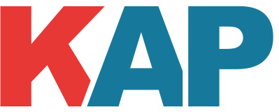

<mat-toolbar>
  <div class="app-fxFlex">
    <a [routerLink]="['/']" queryParamsHandling="preserve" class="app-fxFlex app-fxLayout app-row app-center-v app-gap-3 app-logo">
      
      <span class="app-spacer"></span>
      <span class="app-desc">Kurátorská aplikace</span>
    </a>
  </div>
  <div class="app-fxLayout app-row app-center-v">
    <a [routerLink]="['titles']" routerLinkActive="app-active-link" matButton>{{ 'navbar.titles' | translate}}</a>
    <a [routerLink]="['authors']" routerLinkActive="app-active-link" matButton>{{ 'navbar.authors' | translate}}</a>
    <a [routerLink]="['batches']" routerLinkActive="app-active-link" matButton>{{ 'navbar.batches' | translate}}</a>
    <a [routerLink]="['contracts']" routerLinkActive="app-active-link" matButton>{{ 'navbar.contracts' | translate}}</a>
    @if(auth.user()) {
      <a matButton (click)="viewUser()">{{ auth.user().name }}</a>
    } @else {
     <a matButton (click)="goToKeycloakLogin()">{{ 'navbar.login' | translate}}</a>
    }
    
    <a [routerLink]="['admin']" routerLinkActive="app-active-link" matButton>{{ 'navbar.admin' | translate}}</a>
    <a matButton [matMenuTriggerFor]="menu">{{ translator.currentLang | translate}}</a>
    <mat-menu #menu="matMenu">
      <button mat-menu-item (click)="onLanguageChanged('cs')">Český</button>
      <button mat-menu-item (click)="onLanguageChanged('en')">English</button>
    </mat-menu>
  </div>
</mat-toolbar>
